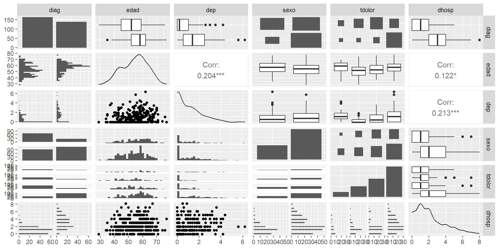
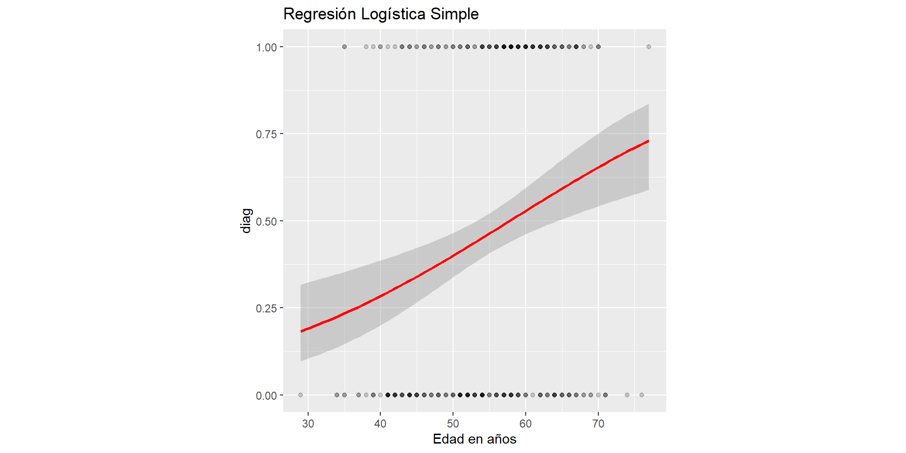
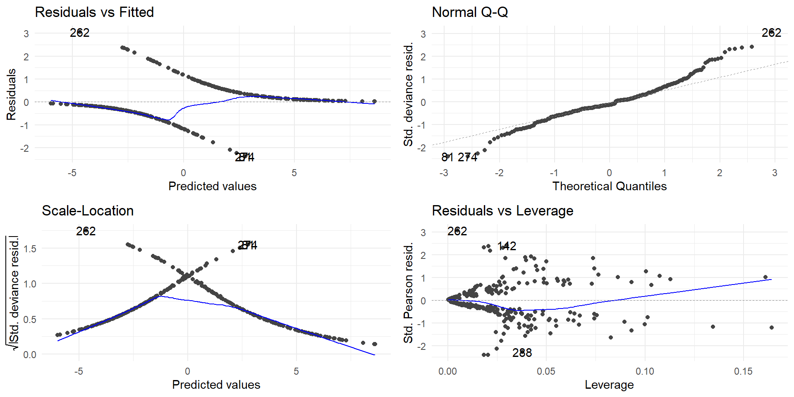
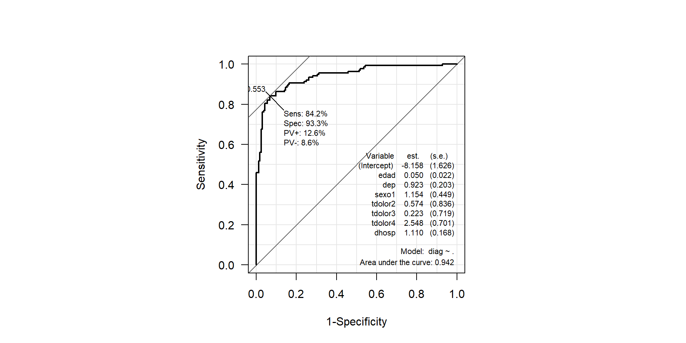
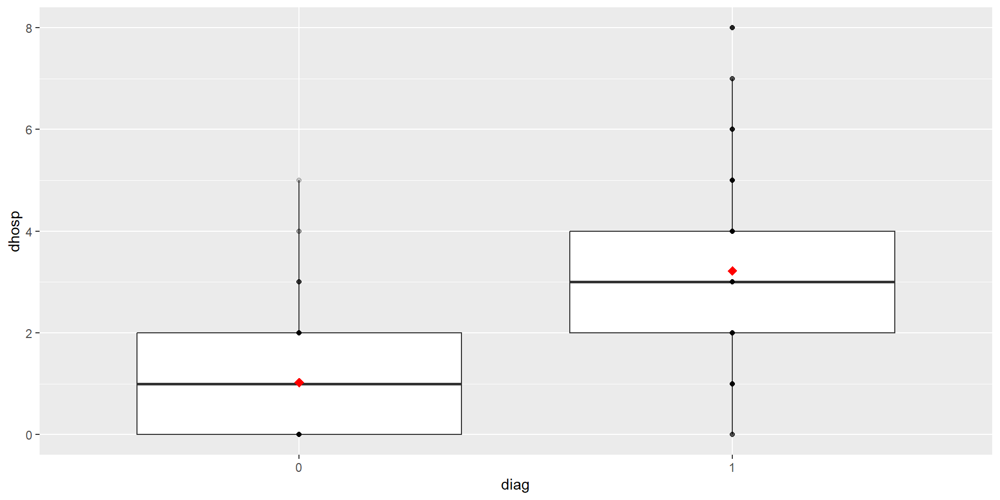
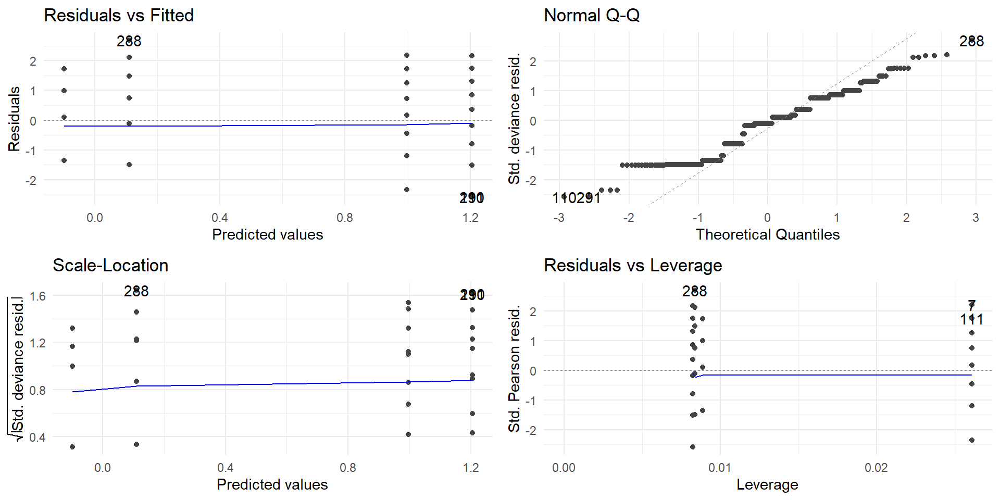

Modelización lineal generalizada paso a paso en R
Víctor Manuel Casero Alonso
Departamento de Matemáticas

Objetivos
- Comprende
R… la aplicación práctica de los modelos lineales generalizados.
- Interpreta
R… resultados y gráficos en casos prácticos.
Planteamiento del problema de regresión lineal generalizada
- ¿Variable respuesta/…?
- ¿Variable explicativa(s)/…?
Regresión Logística Simple
Caso práctico 1 cleveland
Características de pacientes con dolor en el pecho
Estructura
tibble [303 × 6] (S3: tbl_df/tbl/data.frame)
$ diag : Factor w/ 2 levels "0","1": 1 2 2 1 1 1 2 1 2 2 ...
$ edad : 'labelled' int [1:303] 63 67 67 37 41 56 62 57 63 53 ...
..- attr(*, "label")= chr "Edad en años"
$ dep : 'labelled' num [1:303] 2.3 1.5 2.6 3.5 1.4 0.8 3.6 0.6 1.4 3.1 ...
..- attr(*, "label")= chr "epresión ST inducida por ejercicio en relación al reposo"
$ sexo : Factor w/ 2 levels "0","1": 2 2 2 2 1 2 1 1 2 2 ...
$ tdolor: Factor w/ 4 levels "1","2","3","4": 1 4 4 3 2 2 4 4 4 4 ...
$ dhosp : int [1:303] 0 4 3 0 1 1 7 0 1 3 ...Resumen
Ajuste de regresión logística
# y: diag
# x: edad
# Ajuste del modelo GENERALIZADO
Logit_Simp <- glm(diag ~ edad, data = cleveland,
family = "binomial")
# Resumen del modelo
summary(Logit_Simp)
Call:
glm(formula = diag ~ edad, family = "binomial", data = cleveland)
Coefficients:
Estimate Std. Error z value Pr(>|z|)
(Intercept) -3.00591 0.75913 -3.960 7.5e-05 ***
edad 0.05199 0.01367 3.803 0.000143 ***
---
Signif. codes: 0 '***' 0.001 '**' 0.01 '*' 0.05 '.' 0.1 ' ' 1
(Dispersion parameter for binomial family taken to be 1)
Null deviance: 417.98 on 302 degrees of freedom
Residual deviance: 402.54 on 301 degrees of freedom
AIC: 406.54
Number of Fisher Scoring iterations: 4Estimaciones máximo verosímiles!!
Efectos multiplicativos
\(\log (\text{odds})=\log \left( \dfrac{p}{1-p} \right) = \beta_0 + \beta_1 \text{edad} \qquad\) siendo \(p=P(\text{diag}=1)\)
\(\qquad \text{odds}=e^{\beta_0}e^{\beta_1 \text{edad}}\)
Gráficamente
Adecuación
Hosmer and Lemeshow goodness of fit (GOF) test
data: Logit_Simp$y, Logit_Simp$fitted.values
X-squared = 15.271, df = 8, p-value = 0.05409Analysis of Deviance Table
Model: binomial, link: logit
Response: diag
Terms added sequentially (first to last)
Df Deviance Resid. Df Resid. Dev Pr(>Chi)
NULL 302 417.98
edad 1 15.447 301 402.54 8.487e-05 ***
---
Signif. codes: 0 '***' 0.001 '**' 0.01 '*' 0.05 '.' 0.1 ' ' 1Pseudo R^2
McFadden McFaddenAdj CoxSnell Nagelkerke AldrichNelson
0.03695514 0.02738535 0.04970122 0.06641970 0.04850605
VeallZimmermann Efron McKelveyZavoina Tjur AIC
0.08366864 0.05009648 0.06269750 0.04997543 406.53555135
BIC logLik logLik0 G2
413.96301696 -201.26777568 -208.99106920 15.44658705 Residuos !!

Regresión Logística Múltiple
Ajuste
Logit_Mult <- glm(diag ~ ., data = cleveland,
family = "binomial")
# Resumen del modelo
summary(Logit_Mult)
Call:
glm(formula = diag ~ ., family = "binomial", data = cleveland)
Coefficients:
Estimate Std. Error z value Pr(>|z|)
(Intercept) -8.15790 1.62589 -5.017 5.23e-07 ***
edad 0.05015 0.02247 2.232 0.02564 *
dep 0.92345 0.20269 4.556 5.21e-06 ***
sexo1 1.15434 0.44938 2.569 0.01021 *
tdolor2 0.57374 0.83593 0.686 0.49250
tdolor3 0.22284 0.71943 0.310 0.75676
tdolor4 2.54786 0.70137 3.633 0.00028 ***
dhosp 1.10953 0.16810 6.600 4.10e-11 ***
---
Signif. codes: 0 '***' 0.001 '**' 0.01 '*' 0.05 '.' 0.1 ' ' 1
(Dispersion parameter for binomial family taken to be 1)
Null deviance: 417.98 on 302 degrees of freedom
Residual deviance: 183.30 on 295 degrees of freedom
AIC: 199.3
Number of Fisher Scoring iterations: 6Interpretación
Diferencia entre factores y covariables
Adecuación
Hosmer and Lemeshow goodness of fit (GOF) test
data: Logit_Mult$y, Logit_Mult$fitted.values
X-squared = 9.4523, df = 8, p-value = 0.3056Analysis of Deviance Table
Model: binomial, link: logit
Response: diag
Terms added sequentially (first to last)
Df Deviance Resid. Df Resid. Dev Pr(>Chi)
NULL 302 417.98
edad 1 15.447 301 402.54 8.487e-05 ***
dep 1 51.894 300 350.64 5.858e-13 ***
sexo 1 23.982 299 326.66 9.726e-07 ***
tdolor 3 62.153 296 264.51 2.037e-13 ***
dhosp 1 81.202 295 183.30 < 2.2e-16 ***
---
Signif. codes: 0 '***' 0.001 '**' 0.01 '*' 0.05 '.' 0.1 ' ' 1Pseudo R^2
McFadden McFaddenAdj CoxSnell Nagelkerke AldrichNelson
0.5614544 0.5231753 0.5390725 0.7204056 0.4364656
VeallZimmermann Efron McKelveyZavoina Tjur AIC
0.7528645 0.6334330 0.7702445 0.6287870 199.3042278
BIC logLik logLik0 G2
229.0140903 -91.6521139 -208.9910692 234.6779106 Residuos
Clasificación
Clasificación manual
Curva ROC y AUC
Precisión, Sensibilidad, Especificidad…
library(caret)
clase <- ifelse(p > 0.553, "1", "0")
confusionMatrix(table(predicc = clase,
real = cleveland$diag),
positive = "1")Confusion Matrix and Statistics
real
predicc 0 1
0 152 22
1 12 117
Accuracy : 0.8878
95% CI : (0.8467, 0.921)
No Information Rate : 0.5413
P-Value [Acc > NIR] : <2e-16
Kappa : 0.7728
Mcnemar's Test P-Value : 0.1227
Sensitivity : 0.8417
Specificity : 0.9268
Pos Pred Value : 0.9070
Neg Pred Value : 0.8736
Prevalence : 0.4587
Detection Rate : 0.3861
Detection Prevalence : 0.4257
Balanced Accuracy : 0.8843
'Positive' Class : 1
Comparativa

Regresión de Poisson Múltiple
Ajuste
RPoi_Mult <- glm(dhosp ~ ., data = cleveland,
family = "poisson")
# Resumen del modelo
summary(RPoi_Mult)
Call:
glm(formula = dhosp ~ ., family = "poisson", data = cleveland)
Coefficients:
Estimate Std. Error z value Pr(>|z|)
(Intercept) -0.2168175 0.3324906 -0.652 0.5143
diag 1.1138690 0.1127728 9.877 <2e-16 ***
edad 0.0005531 0.0049004 0.113 0.9101
dep -0.0313456 0.0359078 -0.873 0.3827
sexo1 0.2141697 0.1033855 2.072 0.0383 *
tdolor2 0.1137591 0.2074925 0.548 0.5835
tdolor3 0.1145403 0.1896331 0.604 0.5458
tdolor4 0.1180416 0.1786624 0.661 0.5088
---
Signif. codes: 0 '***' 0.001 '**' 0.01 '*' 0.05 '.' 0.1 ' ' 1
(Dispersion parameter for poisson family taken to be 1)
Null deviance: 510.75 on 302 degrees of freedom
Residual deviance: 322.48 on 295 degrees of freedom
AIC: 985.63
Number of Fisher Scoring iterations: 5Ajuste con diag como factor
cleveland$diag <- factor(cleveland$diag)
RPoi_Mult <- glm(dhosp ~ ., data = cleveland,
family = "poisson")
# Resumen del modelo
summary(RPoi_Mult)
Call:
glm(formula = dhosp ~ ., family = "poisson", data = cleveland)
Coefficients:
Estimate Std. Error z value Pr(>|z|)
(Intercept) -0.2168175 0.3324906 -0.652 0.5143
diag1 1.1138690 0.1127728 9.877 <2e-16 ***
edad 0.0005531 0.0049004 0.113 0.9101
dep -0.0313456 0.0359078 -0.873 0.3827
sexo1 0.2141697 0.1033855 2.072 0.0383 *
tdolor2 0.1137591 0.2074925 0.548 0.5835
tdolor3 0.1145403 0.1896331 0.604 0.5458
tdolor4 0.1180416 0.1786624 0.661 0.5088
---
Signif. codes: 0 '***' 0.001 '**' 0.01 '*' 0.05 '.' 0.1 ' ' 1
(Dispersion parameter for poisson family taken to be 1)
Null deviance: 510.75 on 302 degrees of freedom
Residual deviance: 322.48 on 295 degrees of freedom
AIC: 985.63
Number of Fisher Scoring iterations: 5Gráficamente por diag
Gráficamente por edad y diag
library("ggplot2")
ggplot(cleveland, aes(y = dhosp, x = edad, color = diag)) +
geom_point(alpha = 0.2) +
geom_smooth(method = "glm",
method.args = list(family = "poisson")) +
scale_color_manual(values = c("1" = "steelblue", "0" = "firebrick"),
labels = c("1", "0"),
name = "Diagnóstico") +
labs(title = 'Regresión de Poisson Simple')¿Multicolinealidad?
Stepwise
Start: AIC=985.63
dhosp ~ diag + edad + dep + sexo + tdolor
Df Deviance AIC
- tdolor 3 322.94 980.09
- edad 1 322.49 983.64
- dep 1 323.25 984.39
<none> 322.48 985.63
- sexo 1 326.91 988.05
- diag 1 426.25 1087.40
Step: AIC=980.09
dhosp ~ diag + edad + dep + sexo
Df Deviance AIC
- edad 1 322.95 978.10
- dep 1 323.80 978.95
<none> 322.94 980.09
- sexo 1 327.11 982.26
+ tdolor 3 322.48 985.63
- diag 1 455.80 1110.94
Step: AIC=978.1
dhosp ~ diag + dep + sexo
Df Deviance AIC
- dep 1 323.80 976.95
<none> 322.95 978.10
+ edad 1 322.94 980.09
- sexo 1 327.16 980.31
+ tdolor 3 322.49 983.64
- diag 1 461.97 1115.12
Step: AIC=976.95
dhosp ~ diag + sexo
Df Deviance AIC
<none> 323.80 976.95
+ dep 1 322.95 978.10
+ edad 1 323.80 978.95
- sexo 1 328.17 979.32
+ tdolor 3 323.25 982.40
- diag 1 477.75 1128.90Ajuste stepwise
Call:
glm(formula = dhosp ~ diag + sexo, family = "poisson", data = cleveland)
Coefficients:
Estimate Std. Error z value Pr(>|z|)
(Intercept) -0.09798 0.09895 -0.990 0.3221
diag1 1.09449 0.09361 11.692 <2e-16 ***
sexo1 0.20820 0.10133 2.055 0.0399 *
---
Signif. codes: 0 '***' 0.001 '**' 0.01 '*' 0.05 '.' 0.1 ' ' 1
(Dispersion parameter for poisson family taken to be 1)
Null deviance: 510.75 on 302 degrees of freedom
Residual deviance: 323.80 on 300 degrees of freedom
AIC: 976.95
Number of Fisher Scoring iterations: 5 diag1 sexo1
2.987658 1.231461 Adecuación
Predicción
Validación
Conclusiones
- Los modelos lineales generalizados son muy versátiles.
- Engloban los modelos lineales.
- Permiten interpretar relaciones y realizar inferencias.
- Ahora los supuestos se miran de otra manera…
Y el principal es ¿cómo es tu variable respuesta?
Referencias
Casero-Alonso, V., & Durbán, M. (2025). Modelos lineales generalizados. En G. Fernández-Avilés & J.-M. Montero (Coords.), Fundamentos de ciencia de datos con R (Cap. 16). McGraw-Hill.
¡¡ Muchas gracias por la atención !!
Modelización lineal estándar paso a paso en R
Victormanuel.casero@uclm.es
Departamento de Matemáticas